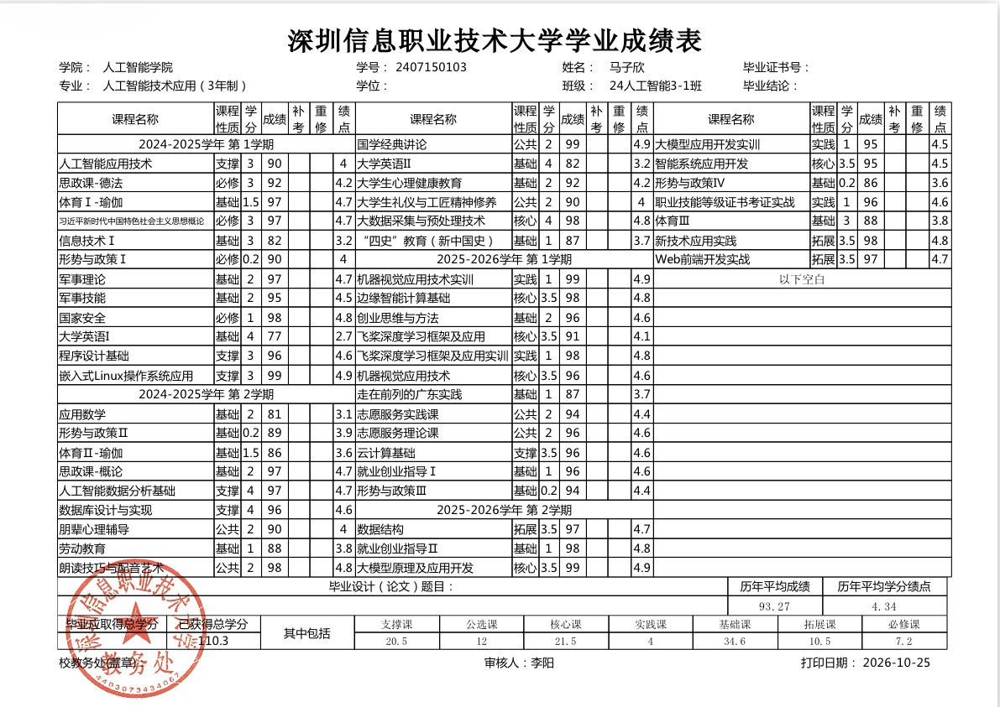

FULL-STACK · AI APPLICATION
马子欣
求职方向：全栈开发 / AI 应用开发工程师
深圳信息职业技术大学 · 人工智能技术应用（专科）
关注工业场景中的 AI 应用、Agent 工作流与可交付的软件产品。
ACADEMIC · ENGINEERING
成绩与技术能力

完整成绩单点击查看 ↗TECH STACK
从需求拆解到可运行原型
PythonFastAPI / DjangoTypeScript / VueAgent · RAG · 工具调用OpenCV · YOLOHarmonyOS / ETSAPI 集成与调试Linux · Git
SELECTED WORK
项目实践
01 / 08
UI · VISUAL DESIGN
UI 与视觉设计
物联网平台界面与组件、品牌视觉、海报和原创设计。
DOCUMENTS · PRESENTATION
文档与表达能力
项目说明、策划方案、技术报告与汇报材料。